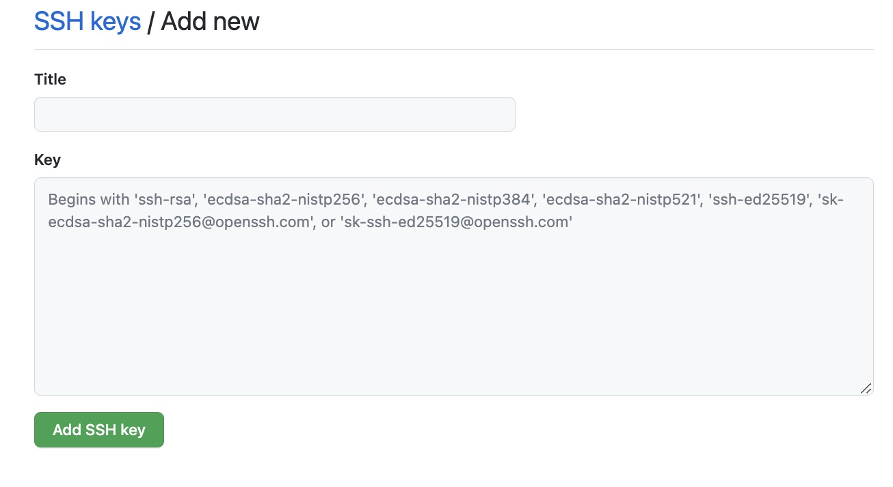

前言
两年没更新博客了，今天一次性更新发现都更新换代了笑死，我的ssh key都过期了，node与hexo版本都不兼容了。
更新完了再回过来看，感慨我原来才写了这么几篇呀，经历了疫情、毕业、再到开学成为研究生，心路历程可能也一直在变化吧，有很多东西都没有记录到，以后争取多记录点，但估计也是隔一段时间一起更新这样，谁知道呢。到时再说吧哈哈哈
下面要开始记录一些报错及解决方案了
hexo d报错
1 | GlarcydeMacBook-Pro:blog glarcy$ hexo d |
百度了说是node版本太高，与hexo不兼容
1 | GlarcydeMacBook-Pro:blog glarcy$ hexo -v |
回退node
1 | npm install n -g |
再次更新hexo d
1 | git@github.com: Permission denied (publickey). |
去看了一下github，发现ssh key已经不在了哈哈，重新配置
重新生成ssh key
1 | ssh-keygen -t rsa -C "你的email地址" |
查看公钥，并复制
1 | cat ~/.ssh/id_rsa.pub |
去github，右上角点击头像–setting–左边栏SSH and GPG keys–new SSH key，title随便填，把公钥复制到key的那个框框，然后add

回到终端
1 | GlarcydeMacBook-Pro:blog glarcy$ ssh -T git@github.com |
再次提交，显示无文件要提交，干净的工作区
1 | hexo clean |